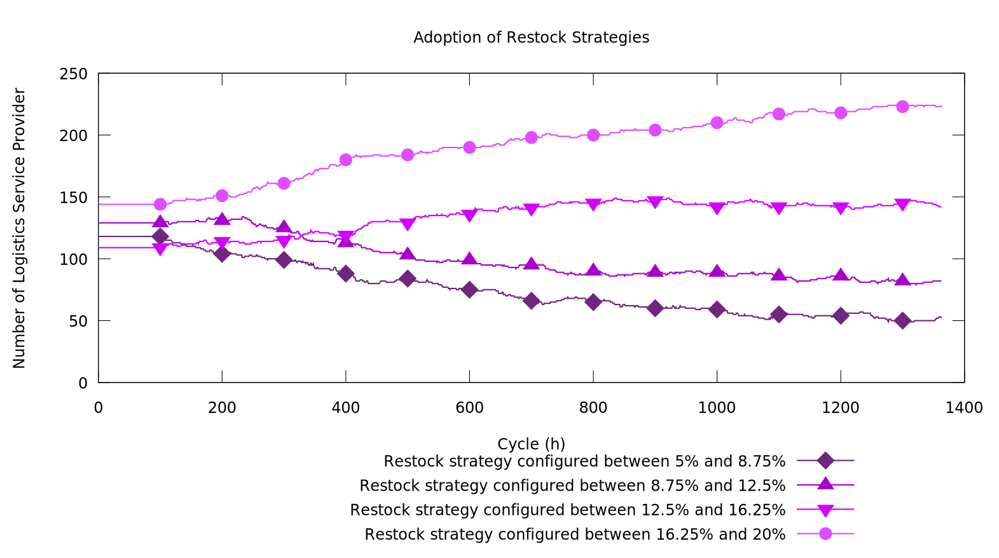

Thibaut Démare - LITIS
thibaut.demare@univ-lehavre.fr
thibaut.demare@univ-lehavre.fr
Emergence of Strategies in a Logistic System Thanks to an Agent-based Model and Dynamic Graphs
GOL'18
Le Havre
10-12th April 2018
Le Havre
10-12th April 2018
Emergence of Strategies in a Logistic System Thanks to an Agent-based Model and Dynamic Graphs
Thibaut Démare
Stefan Balev, Cyrille Bertelle, Antoine Dutot, Dominique Fournier and Eric Sanlaville
Normandie Université
LITIS
GOL'18
10-12th April 2018
Overview
- Context and Problematic
- Model
- Results
Context and Problematic
Presentation of a logistic system
- A logistic system is part of a geographical territory composed of urban areas and of logistic structures.
- The different kind of flow (of goods, of information, or financial) are organized by actors and thanks to infrastructures.
- The goods enter and leave the system through well-known access nodes.
- Cities or urban areas attract and generate these flow.
- Different constraints (spatial, economical, political, or ecological) act over the system.
A distributed organization of the flow
Figure 1: Each actor manages a part of the flow. Their interactions and behaviors allows a coherent organization which is said auto-organized.
Problematic
- We want to understand how actors with different goals, are organized around all the logistic infrastructures to manage flows of goods despite all the constraints of the system.
- But existing models are limited because they simulate few actors, or because they are not enough dynamic and do not allow the actors to adapt themselves to different situations.
- We propose an agent-based model which represent the properties, constraints and behaviors at a local level of a logistic system in order to reproduce the global behaviors thanks to the simulation.
- The simulation allows to test different scenarios to understand how local decisions impact the whole system.
Model
A complex system approach
- A multi-agent model which represents each actor and infrastructure by autonomous and reactive entities.
- These agents have rules which describe how they behave and interact together according to the perception of their environment and their needs.
- Dynamic graphs represent the multi-modal transportation network.
- We can track vehicle trips in real time and observe the evolution of the traffic.
Representation of the model
Figure 3: Representation of the model
The agents
Figure 4: the agents.
How final consignees manage their collaboration with LSPs
Figure 5: How final consignees manage their collaboration with LSPs
The restock threshold
- the LSP monitors the stocks levels once a day.
- For each stock inside the warehouses of his network, the LSP determines if the current quantity of goods is too low according to this formula:
- $q < q_\text{max} \times S$
- where:
- $q$ is the current quantity of goods
- $q_\text{max}$ is the maximal quantity of goods for this stock
- $S$ is the restock threshold.
Results
The implementation
- We implemented the model in the GAMA simulation platform. One simulated step equals to one hour.
- We use real data about the Seine axis (around 12 000 agents) in order to validate the model and to do analysis.
- The Seine axis is mostly represented by the road (around 90% of the traffic is done by road). Therefore, we did not implement other modes of transport.
Screenshot of the simulation

Figure 7: Screenshot of the simulation
Emergence of the best restock strategies

Figure 8: Emergence of the best restock strategies: the LSPs with higher restock threshold value are more numerous at the end of the simulation.
Figure 8: Emergence of the best restock strategies: the LSPs with higher restock threshold value are more numerous at the end of the simulation.
Perturbations of the traffic
Scenario 1 (steps 0 to 500): we don't disturb the traffic at all.
Scenario 2 (steps 500 to 1000): we disturb the traffic on the Antwerp-Paris axis.
Scenario 3 (after step 1000): we almost block the whole traffic on the Antwerp-Paris axis.
Conclusion
Conclusion
- We have implemented a functional simulation which uses an individual-based approach. And it is dynamic since the agents adapt themselves their behaviors.
- It allows to observe the evolution of logistic systems according to different parameters or scenarios.
Perspectives
- We are working on the implementation of the multi-modal network in order to test, for instance, the effects of the future Canal Seine-Nord project.
- We also would like to work on community detection to get a better understanding of the interactions between the agents.
Thank you !
thibaut.demare@univ-lehavre.fr